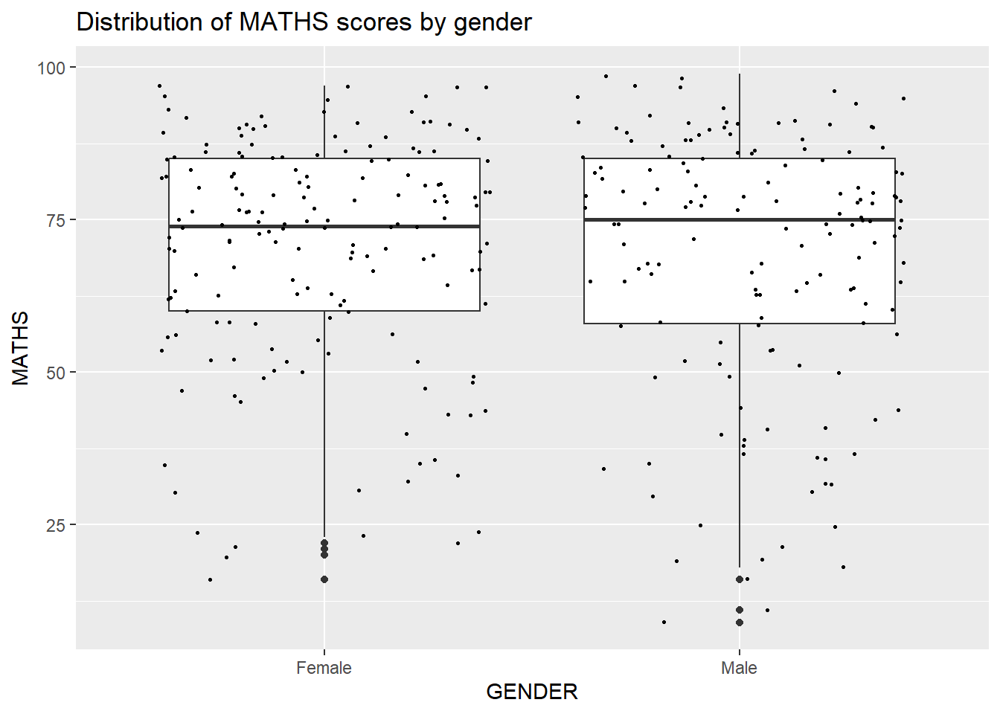
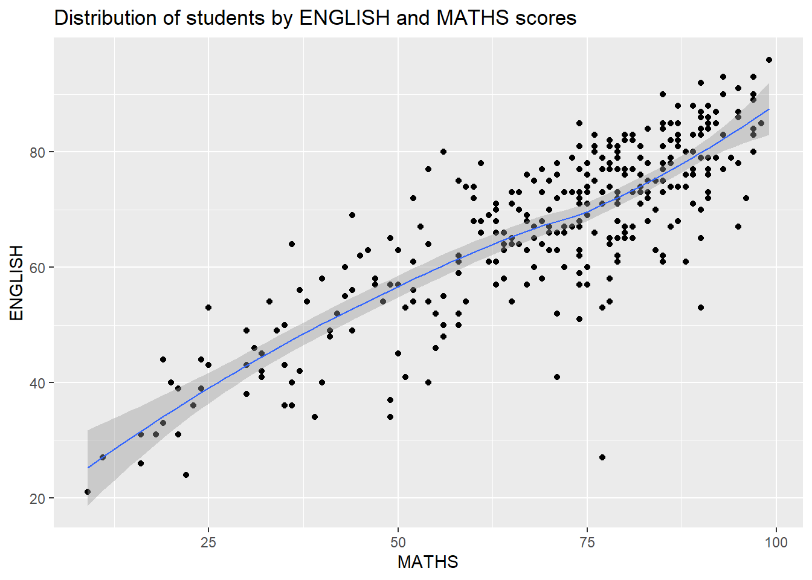

pacman::p_load(tidyverse)Hands-on Exercise 1
Getting Started
Loading R package
Importing Data
exam_data <- read_csv("data/Exam_data.csv")Wrangling Data
Geom bar
ggplot(data=exam_data,
aes(x=RACE)) +
geom_bar()+
ggtitle("Distribution of cohort of primary 3 students from a local school by race")Geom dotplot
ggplot(data=exam_data,
aes(x = MATHS)) +
geom_dotplot(binwidth=2.5,
dotsize = 0.5)+
scale_y_continuous(NULL,
breaks=NULL)+
ggtitle("Distribution of students by MATHS score")Geom histogram
ggplot(data=exam_data,
aes(x= MATHS)) +
geom_histogram(bins=20,
color="black",
fill="light yellow")+
ggtitle("Distribution of students by MATHS score")ggplot(data=exam_data,
aes(x= MATHS,
fill = GENDER)) +
geom_histogram(bins=20,
color="grey30")+
ggtitle("Distribution of students by MATHS score and by gender")Geom density
Useful alternative to the histogram for continuous data that comes from an underlying smooth distribution.
ggplot(data=exam_data,
aes(x = MATHS)) +
geom_density()+
ggtitle("Distribution of students by MATHS score")ggplot(data=exam_data,
aes(x = MATHS,
colour = GENDER)) +
geom_density()+
ggtitle("Distribution of students by MATHS score and by gender")Geom boxplot
ggplot(data=exam_data,
aes(y = MATHS,
x= GENDER)) +
geom_boxplot()+
ggtitle("Distribution of MATHS score for each gender")Notched plot
ggplot(data=exam_data,
aes(y = MATHS,
x= GENDER)) +
geom_boxplot(notch=TRUE)+
ggtitle("Distribution of MATHS score for each gender")Observation: Median MATHS score for female and male is different.
Geom violin
Used to compare multiple data distributions
ggplot(data=exam_data,
aes(y = MATHS,
x= GENDER)) +
geom_violin()+
ggtitle("Distribution of MATHS score by gender")Geom point aka scatterplot
ggplot(data=exam_data,
aes(x= MATHS,
y=ENGLISH)) +
geom_point()+
ggtitle("Distribution of students according to MATHS and ENGLISH scores")Combination of geom objects
Combination of geom boxplot and geom point (scatterplot)
ggplot(data=exam_data,
aes(y = MATHS,
x= GENDER)) +
geom_boxplot() +
geom_point(position="jitter",
size = 0.5)+
ggtitle("Distribution of MATHS scores by gender")
Exploring statistical functions
Adding a statistical summary use stat_summary() method (overrides the default geom)
ggplot(data=exam_data,
aes(y = MATHS, x= GENDER)) +
geom_boxplot() +
stat_summary(geom = "point",
fun.y="mean",
colour ="light blue",
size=4)+
ggtitle("Distribution of MATHS scores by gender with stat summary")Adding a statistical summary using geom() method (overrides default stat)
ggplot(data=exam_data,
aes(y = MATHS, x= GENDER)) +
geom_boxplot() +
geom_point(stat="summary",
fun.y="mean",
colour ="pink",
size=4)+
ggtitle("Distribution of MATHS scores by gender with stat summary")Adding a best fit curve to scatterplot
Default loess smoothing method
ggplot(data=exam_data,
aes(x= MATHS, y=ENGLISH)) +
geom_point() +
geom_smooth(linewidth=0.5)+
ggtitle("Distribution of students by ENGLISH and MATHS scores")
Using lm smoothing method
ggplot(data=exam_data,
aes(x= MATHS,
y=ENGLISH)) +
geom_point() +
geom_smooth(method=lm,
linewidth=0.5)+
ggtitle("Distribution of students by ENGLISH and MATHS scores")Working with facets
Facetting is helpful in displaying different subsets of the data.
- Using facet_wrap()
Better use of screen space than facet_grid because most displays are roughly rectangular.
ggplot(data=exam_data,
aes(x= MATHS)) +
geom_histogram(bins=20,
color="black",
fill="orange") +
facet_wrap(~ CLASS)+
ggtitle("Distribution of MATHS scores by class")- Using facet_grid()
Most useful when you have two discrete variables, and all combinations of the variables exist in the data.
ggplot(data=exam_data,
aes(x= MATHS)) +
geom_histogram(bins=20,
color="black",
fill="purple") +
facet_grid(~ CLASS)+
ggtitle("Distribution of MATHS scores by class")Main difference between the two functions:
- The facet_grid() function will produce a grid of plots for each combination of variables that you specify, even if some plots are empty.
- The facet_wrap() function will only produce plots for the combinations of variables that have values, which means it won’t produce any empty plots.
Source: https://www.statology.org/facet_wrap-vs-facet_grid-in-r/
Coordinates
- Flip bar chart configuration from vertical to horizontal
ggplot(data=exam_data,
aes(x=RACE)) +
geom_bar()+
ggtitle("Distribution of students by race")ggplot(data=exam_data,
aes(x=RACE)) +
geom_bar()+
coord_flip()+
ggtitle("Distribution of students by race")Changing x- and y- axis range
Chart below is misleading as x- and y-axis ranges are not equal. y-axis is denoted in chunks of 20 while x-axis is denoted in chunks of 25.
ggplot(data=exam_data,
aes(x= MATHS, y=ENGLISH)) +
geom_point() +
geom_smooth(method=lm, linewidth=0.5)+
ggtitle("Distribution of students by ENGLISH and MATHS scores")
Adjusting the x- and y-axis to range from 0 to 100 in equal chunks
ggplot(data=exam_data,
aes(x= MATHS, y=ENGLISH)) +
geom_point() +
geom_smooth(method=lm,
linewidth=0.5) +
coord_cartesian(xlim=c(0,100),
ylim=c(0,100))+
ggtitle("Distribution of students by ENGLISH and MATHS scores")Exploring themes in ggplot2
Themes control elements of the graph not related to the data i.e. background color, size of fonts and color of labels
- Theme grey
ggplot(data=exam_data,
aes(x=RACE)) +
geom_bar() +
coord_flip() +
theme_gray()+
ggtitle("Distribution of students by race")
- Theme classic
ggplot(data=exam_data,
aes(x=RACE)) +
geom_bar() +
coord_flip() +
theme_classic()+
ggtitle("Distribution of students by race")- Theme minimal
ggplot(data=exam_data,
aes(x=RACE)) +
geom_bar() +
coord_flip() +
theme_minimal()+
ggtitle("Distribution of students by race")In-class review of hands-on exercise 1 (17 Feb 2024)
- y-axis of density curve should be labelled as probability values
- weakness in interpretation, to be sharper in interpretation i.e. probability density curve is a sign of skewness – the different tail lengths indicate no normal distribution
- if x variable is numerical a scatterplot, change to factor will help generate a boxplot
- for the probability density curve, to sort it by values (either mean or median), otherwise will miss the pattern which is like 3 clusters (800 to 600, 600 to 400, 400 and below), every school has good students but for relatively poorer schools, their poorest performing students fair worse than those in better schools.
- exclude NA responses when carrying out visualisations cause not helpful, interactivity required for that kind of graph (to find out what name)
- for scatterplots with best fit line - need to adjust aspect ratio (y-axis too short, x-axis too long)
- try to opt for balanced design i.e. bar chart showing distribution of students by school type (private vs public) then on the right 3 boxplots showing the math, reading and science scores of students by school types